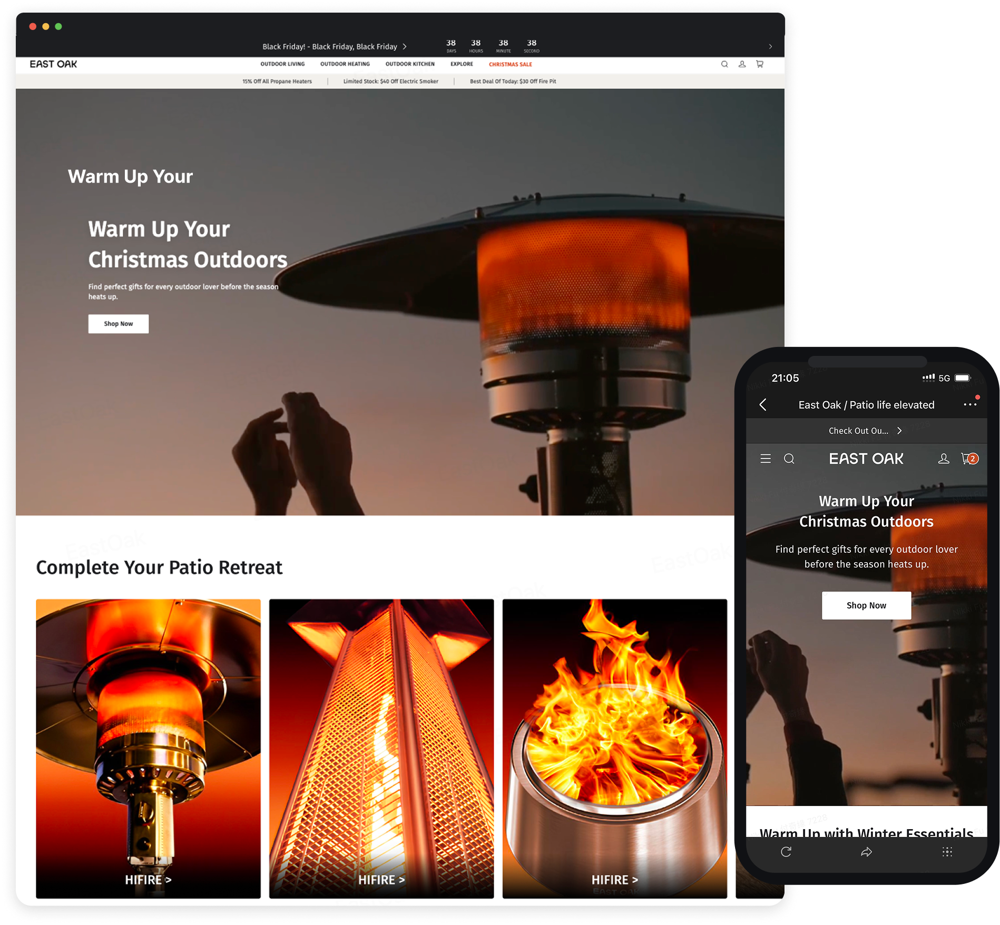
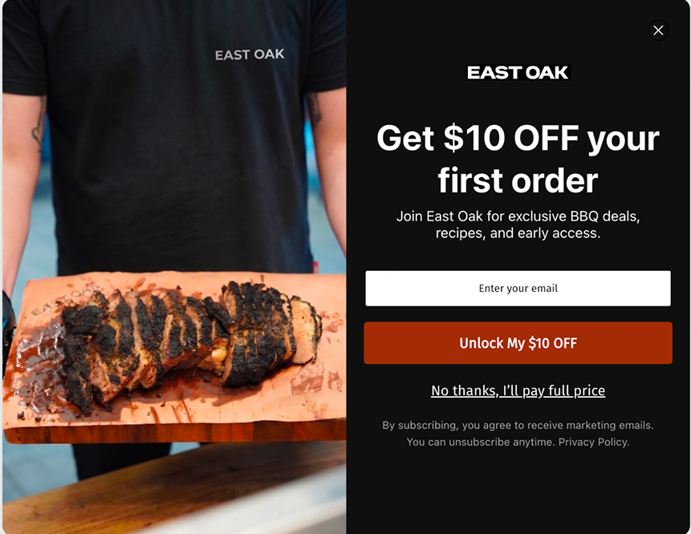
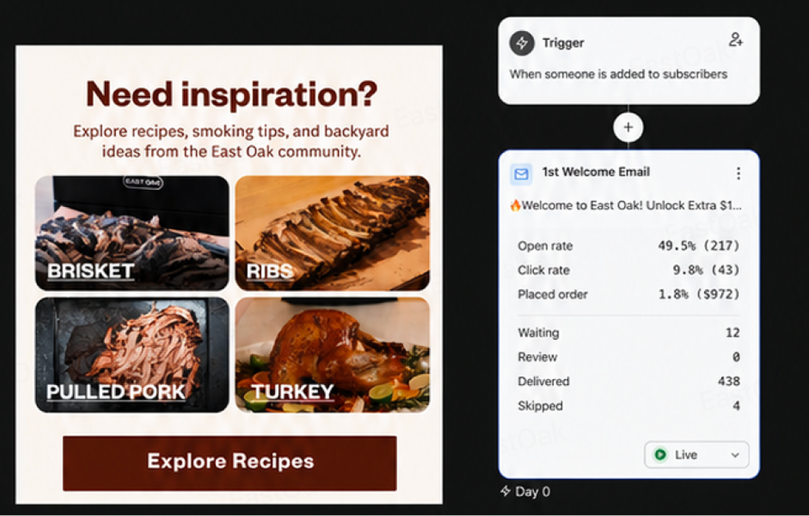
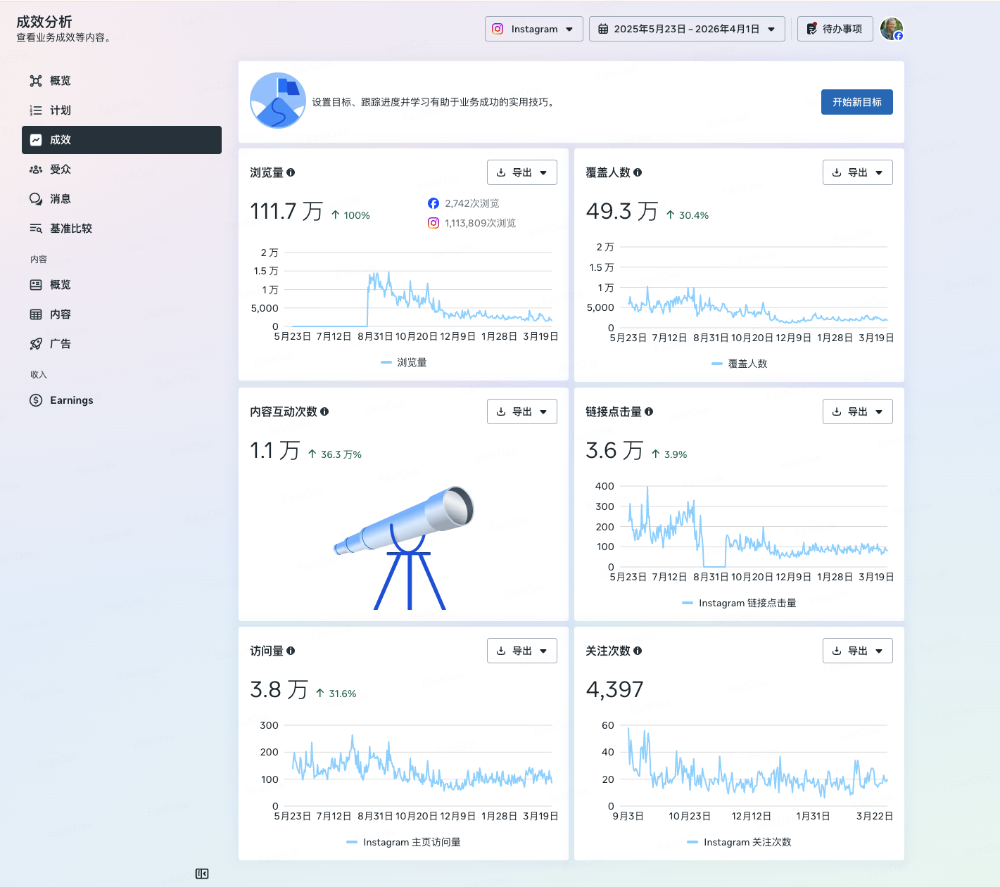

MediaDesktop / Mobile Image or VideoCopyEyebrow / Heading / BodyActionsPrimary / Secondary CTA
返回全部作品
SHOPIFY · DESIGN SYSTEM · EDM
EAST OAK
Shopify 2.0 独立站升级
我们结合 EAST OAK 的产品特点和品牌方向，推进 Shopify 2.0 改版。我负责核心页面、组件规则与 EDM 设计，并与开发、市场和运营团队一起完成上线。AI 也逐步用于设计与开发中的部分工作。
我的职责核心页面设计 · 可复用组件 · 邮件营销

PROJECT SNAPSHOT
[2024—2026]
项目背景与职责
- CHALLENGE
- 改版前，上新和活动常常需要重新设计页面。运营依赖临时交付，不同页面的样式和信息顺序也难以统一。
- MY ROLE
- UX/UI、视觉方向、组件规范、EDM 设计与运营、项目推进及上线检查。
- TEAM
- 跨职能协作
市场 · 开发 · 内容 · 运营
- TOOLS USED
- FigmaShopifyKlaviyoCodexAdobe
01 · REUSABLE COMPONENTS
把常用 Banner 做成可以配置的 Section。
我先盘点高频页面和活动需求，将重复的 Banner 结构拆成媒体、文案、按钮和显示规则。运营可在 Shopify 后台替换内容，调整位置、蒙版和高度，不必每次重新设计整页。
REUSABLE BANNER SYSTEM
桌面与手机分别配置。
桌面与手机分别配置素材和内容位置。组件可用于首页、商品内容区和活动页。
CONFIGURABLE SECTIONREUSABLE BANNERContent Slots · Display Controls
Visual Layer · Responsive Rules
Visual Layer · Responsive Rules
HorizontalLeft / Center / RightVerticalTop / Middle / BottomText AlignLeft / Center / RightContent WidthSmall / Medium / LargeSection HeightAuto / Fixed / Full screenFocal PointMedia focus position
Overlay TypeSolid / GradientOverlay ColorBrand or custom colorOpacityText readability controlText ColorLight / Dark / CustomFallbackBackground color
Mobile AssetIndependent mediaMobile PositionContent placementContent OrderMedia / Copy / CTAVideo BehaviorAutoplay / Loop / Poster
HOMEPAGE品牌与主推产品
PDP商品卖点与内容模块
CAMPAIGN PAGE新品与促销活动
02 · CORE PAGES
首页帮助浏览，商品页帮助选择。
围绕发现、浏览、购买与账户管理的页面探索

02B · LIVE EXPERIENCE
成品页面展示。
首页重新安排主推内容、品类入口和使用场景，让用户能从活动进入具体商品；运营则可以独立更新各个内容模块。

PDP
PDP 将产品图片、价格、规格、变体和购买按钮集中在前部。后续按模块展示尺寸、性能、配件、配送与评价，用户可以按需要继续查看。
PRODUCT EDUCATION不同产品沿用基本结构，再补充各自需要的功能和使用说明。
03 · LIFECYCLE GROWTH
根据用户阶段安排邮件内容。
首次访问时，用 $10 优惠引导邮箱订阅；Welcome Flow 自动发送优惠和内容入口。购买前后，再通过活动邮件与自动化流程提供使用说明、新品、促销和配件信息。
访问与订阅 欢迎邮件 购买 使用与后续沟通

订阅弹窗

欢迎邮件

活动与使用内容
05 · 上线与交付
从反复做页面，到运营自己改内容。
常用 Banner 已拆成可复用的 Shopify Section，上新与活动可以沿用同一套页面规则。
我的贡献设计核心页面与组件规则，推进 EDM 设计、开发协作和上线检查。
团队落地与开发、市场、内容和运营团队一起，把设计接入 Shopify 并完成上线。
04 · SOCIAL MEDIA
网站与邮件之外，持续运营品牌社媒。
除网站与邮件相关工作外，我也负责 EAST OAK 的社媒运营。以下单独呈现负责运营期间的 Instagram 表现。
2025.05.23—2026.04.01负责社媒运营期间 · Instagram
来源：Meta 成效分析。浏览量采用 Instagram 单平台数据；数字按截图四舍五入展示，未区分自然与付费流量。
查看后台数据记录 ＋
